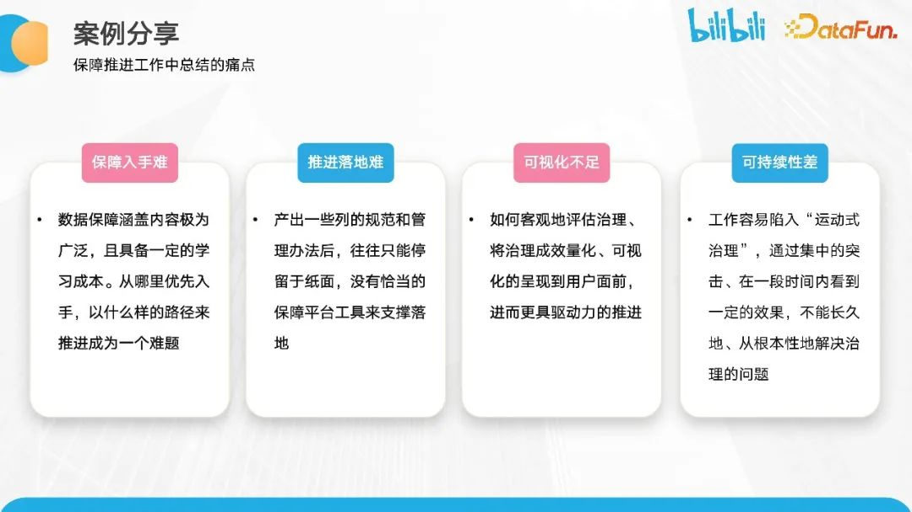

B站数据质量保障体系建设与实践
转自公众号：DataFunTalk
http://mp.weixin.qq.com/s?__biz=MzU1NTMyOTI4Mw==&mid=2247689178&idx=1&sn=0b1c4367abc921b2c87f49a1caf0d762

01
背景目标
首先，分享一下 B 站数据质量保障的背景和目标。
B 站数据建设的历史演进可以分为四个阶段。
数据库阶段。在这个阶段B 站处于初创阶段，业务也在初步发展中，数据逐渐受到各方的重视。这一阶段的质量保障重点在于设计测试用例、验证数据正确性，并进行数据库的监控和调优。
数据仓库阶段。这个阶段的出现是因为随着业务的发展，各方对数据的需求也日益增加，更加关注 OLAP 相关的需求。随着业务的复杂性增加，我们意识到单一数据库无法满足需求。这一阶段更加注重数据的完整性、准确性、一致性和及时性的保障。
数据平台阶段。随着中国互联网浪潮的兴起，数据量急剧增加，随之进入了数据平台阶段。在传统的 OLAP 分析系统（如TeraData）和 SaaS 传统分析系统中，面对大数据场景，数据无法有效地服务于应用分析体系。因此，我们逐渐引入开源生态系统，如 Hadoop 和相关开源组件。这个阶段更加关注保障架构的质量，包括链路的可用性和数据加工链路的多样性，以及实时链路。
中台阶段。不仅要承接前三个阶段的数据和需求，还要着重解决业务问题和数据化的核心需求。在这个阶段，业务逐渐多样化，要求能力服务化和数据智能化。在质量保障方面，兼容了前三个阶段的内容，并基于这些内容展开了一些延展讨论。这将是接下来分享的重点。
这里想强调的一点是，数据质量保障是持续发展的。只有了解不同阶段的背景和目标，才能更好地实现数据质量保障。
B站数据中台当前数据架构如下图所示。整体上分为四个层次，自下而上分别是数据源、数据平台、数据中台和数据应用。
数据源包括多个相关的服务系统，如账户系统、埋点系统、CRM 系统和第三方系统等。这些系统为我们的数据仓库提供持续的数据，这些数据通过数据平台进行集成，并具备离线和实时的能力，将数据导入到数据仓库体系中。
在部分场景下，我们推进全域数据的中心化建设。在此基础上，再进行相应的主题域拆解，这是互联网行业常见的主题域划分，包括用户主题、交易主题、内容主题、营销社区等。此外，我们还进行了更多类似于分析项的体系化建设。
在数据应用层面，可以简单地分为 PC 端和移动端的数据应用。我们着重关注埋点分析看板，包括增长、运营、内容等方面的数据展示。我们可以看到数据的流转管道，即数据管道，已经扩展得非常庞杂。与传统的数据仓库不同，质量保障不再仅仅基于单一的 OLAP 系统，而可能涉及多层次、多组件、多团队甚至多部门之间的合作和沟通，以推进保障工作。
随着业务的发展，对数据质量保障的需求也日益增加。下图中展示了一些来自与我们合作频繁的团队的反馈，这些反馈涉及到日常合作中经常出现的问题。这进一步证明了数据质量保障的需求随着业务的发展而增加。
我们收集到的反馈包括但不限于以下几点：
首先，分析看板的页面显示数据没有展示透出，这可能会影响用户体验；
其次，分析师可能会反馈某天的数据指标为零是否合理，因为这可能会影响他们的业务决策；
此外，开发同学也有数据质量方面的需求，比如夜间的值班报警电话频繁响起，起夜率爆表等，这会严重影响同学们的正常作息。
基于以上情况，我们抽象出三个方面的核心保障痛点：
数据使用方，希望数据能够按预期时间产出，并且数据准确可信。在故障发生时，希望能够快速恢复，不影响正常使用。
作为数据建设方，我们需要根据业务发展的时间推演，确定哪些数据是用户真正关注的，优先进行强保障，而对于长尾部分可以适当降级。开发同学也希望了解用户对数据质量和时效性的具体要求。
管道方是与数据仓库协同配合的兄弟团队，他们对于流转到其管道中的数据也有保障需求。因为作为数据链路的上下游相关方，任何一个节点出现问题都可能导致数据不准确，数据质量不达标。他们的诉求更多是在极端情况下的恢复响应要求以及不同场景的保障要求。
总体目标是通过持续改善数据质量，减少事故纠错成本，降低数据使用风险，并提升业务服务满意度。
让我们进一步深入探讨，了解质量问题产生的根本原因。我们进行了一些梳理，将其分为四个部分：
技术原因。数据经过多个层次的加工才得到最终结果，因此不同链路的标准制定对于数据质量至关重要。这包括模型设计的合理性，是否充分理解数据的业务含义，并根据此进行相应的数据加工，以获得准确的结果。此外，数据采集和清洗过程是否符合标准规范也是关键。
业务原因。数据主要承载业务的表达。脱离了业务场景，数据往往就不再有任何价值。因此，如果对业务理解不到位，包括业务流程的变更没有及时了解，都会影响最终数据质量的展现。
管理原因。首先，流程管理是否足够完善是一个重要方面。其次，团队成员是否具备足够的质量保障意识也很关键。第三，奖惩机制的设立也是必要的。因为质量保障是一个严肃的话题，一旦出现问题，我们需要有明确的责任分配计划，以引起大家对此事的关注，并确保日常数据的持续保障。
推进方面的原因。一旦确立了相关标准，我们需要将这些准则明确地推进到各个工作的细节中，以确保历史相关问题不再重现。此外，长期的可持续优化策略对于数据质量的保障也非常重要。
根据以上对问题原因的梳理，我们总结了三个主要方向上的痛点：
首先是整体数据质量保障的范围和目标不够清晰。这体现在各个团队对需要保障的数据范围缺乏清晰的认识，有些链路甚至没有进行日常的保障。并且，保障分级不够准确，导致无法区分不同能力投入的保障需求。随着数据建设的推进，架构变得越来越复杂。保障目标没有拆解到相关团队，导致这些团队没有进行相应的保障工作，影响了数据保障的最终结果。
另一方面的痛点是无法衡量保障效果。我们上学时都对分数有着深刻的体验，分数可以衡量学习的好坏。同样的逻辑也适用于数据质量保障，但我们无法衡量我们的保障工作对整体目标的贡献。其次是当前保障推进到什么阶段，缺乏相应的指标来指导和持续优化，需要持续衡量的方法论。
第三个方面的痛点是整个保障机制的规范性还不够完善，大多是单点保障。然而，当前的发展趋势是数据上下游链路需要协同解决这些问题。
基于刚刚介绍的背景、痛点和发展趋势，我们总结出了四个重点的保障目标。
第一个保障目标是准确识别核心场景，并支持数字化的效果衡量，以提升待办事项的信息化水平。
第二个保障目标是确保数据满足四个基本原则：完整性、准确性、一致性和时效性。同时，还需要满足各个用户实际场景的定制化需求。
第三个保障目标是确保数据保障贯穿整个数据生命周期的全链路。包括事前、事中和事后，涵盖数据的生产、传输、加工、组装和服务等各个环节。
第四个保障目标是基于日常保障工作的经验，沉淀方法论，并推进数据中台相应的工具能力建设，支持在预防、响应、处理、恢复和复查等阶段高效地解决问题。
体系架构
基于上述目标，我们以质量数仓建设为基础，构建三大核心能力：完备的质量保障体系、数字化驱动持续优化，以及高效的故障处理能力。
首先，我们引入相关的保障服务数据，统一数据仓库的建设，并依托数据中台的能力快速构建数仓架构。完成数仓架构后，我们将以数仓质量数据为指引，描述相应的保障问题，并支持决策数据的使用。同时，数仓的数据将支持日常的数据检测和分析等工作，以消除事前的问题。数仓还有一个核心的保障工作，即与相关团队协商保障目标，并进行衡量和拆解。

整个架构可以分为四个层次，自下而上分别是数据源、数仓建设、分析项目建设和最终的应用。在质量数仓的数据源层，包括了告警服务、基线服务、DQC服务、血缘数据、事件管理和值班系统等相关的数据服务系统。我们将这些系统的数据统一导入到数仓中，并进行相应的分层建设。
在分层方面，我们进行了明细层、进度汇总层和高度汇总层的区分。在这些分层中，我们将保障效果的数据进行抽象，包括异常清单和告警情况，并进行相应的数据建设，最终呈现在看板上。这为数仓团队和横向团队提供了数据能力，包括质量分运营看板、实时保障看板和告警归因看板等一系列数据服务能力。
在质量数仓的基础之上，接下来是三个核心能力。
第一个核心能力是完备的质量保障体系。目标是确保数据满足用户要求。各方需要对数据质量负责，并按照标准监控数据质量。我们会沉淀规则库，为实现保障目标提供服务，并推进可持续改进计划。
这一核心能力可以进一步拆解为三个部分。
①第一部分是构建监测体系。
在这个体系中，我们将通过数据资产的定级来触发加工链路的卡点校验，并进一步监控数据风险点。这包括常见的数据保障实体、基线任务和模型，并通过这些来衡量数据质量的效果。其次是构建质量分衡量机制，并支持从多维度的视角进行衡量。最后是制定保障规则，并识别各个数据资产的待优化项。在这个过程中，有两个重要的方面需要提及，第一个方面是卡点校验规则库，这个规则库主要涵盖完整性、一致性、有效性和及时性等与数仓传统卡点校验相关的内容，我们在此基础上将进一步扩展到埋点、集成、加工、组装、出仓和 API 服务等相关环节；第二个方面是建立事故归因知识库，这个知识库主要用于归因相关的问题，并结合告警和恢复工具的能力，提高用户解决问题的效率，降低异常成本。
②第二部分是部门间的协同保障。
数据中台的链路已经相对复杂，因此如何与数据中台的上下游相关方协同合作，共同制定符合 SLA 保障标准的机制，并形成跨团队的保障机制，是非常重要的保障环节。
这里重点介绍夜间值班的情况。
夜间值班的流程包括：紧急跟进、原因定位、数据恢复和影响通知。数仓团队的值班同学会触发卡点校验的告警监控。一旦触发，我们会立即采取止损措施，并评估数据是否对业务产生潜在影响。如果有影响，我们会及时通知相关方，并将问题转交给兄弟团队进行跟进和数据恢复。恢复完成后，我们会再次通知相关业务方，并对整个事项进行归档。

③第三部分是推进日常运营。
日常运营化是指周期性地同步基于质量数仓产出的保障核心指标和目标的情况，确保其达到标准。同时，我们会定期回顾过去一段时间的历史问题，并进行规则的沉淀和归类，以避免类似问题的重复发生。我们会定期确定保障项目的效果，推动代办人员进行相应事项的完善。
在推进过程中，我们对保障目标进行了抽象，并确定了衡量和提升的方法。基于当前中台的核心衡量维度，我们关注数据的完整性、一致性、准确性和告警响应度，以及监控的覆盖率、作业稳定性、时效性和链路保障率等方面。我们还基于八个维度构建了质量分，满分为 100 分，并将其拆分为多个维度。通过质量分，我们可以衡量当前保障工作的进展和目标。接下来，我们将基于质量分来分发待办事项。例如，对于模型监控覆盖率方面，我们会提醒相关人员进行相应的操作，如配置完整性检查和逐渐重复检查。
3. 数字化驱动持续优化
第二大核心能力是数字化驱动的持续优化。在这一部分，我们主要关注在构建基于源数据的数仓体系后的决策判断。我们的推进策略按照以下链路进行管控：首先是构建衡量指标，然后进行现状分析的描述，接着基于数据发现问题并提出解决方案，最后持续跟进优化效果。整体目标是通过数字化的衡量来驱动质量保障，并持续提升保障效果。
4. 高效的故障处理能力
第三大核心能力是高效的故障处理能力。根据过去的保障实践经验，质量问题是难以避免的。在面对质量保障问题时，我们需要快速响应，将问题最小化，甚至在短时间内实现快速恢复，以确保用户无感知。这是一个重要的方向。

基于此，我们进行了一些功能支持和方法论的设计。从数据开发的视角，提供了机械风险诊断、告警能力优化、故障恢复系统和规则配置系统等。另外，从底层服务的视角，致力于构建一键恢复的故障链路、分级全链路保障和统一运维值班机制。
目标是通过日常保障实践来沉淀方法论，持续打磨产品能力，提升数据质量标准。同时，我们也致力于优化故障响应效率，降低夜间值班的成本。
案例分享
接下来，分享B站在保障方面的一个实际案例。
以上是数据开发的正常流程，包括任务上线、日常跑批的监控覆盖以及可能触发的告警。在发生问题后，我们会进行相应的响应和数据恢复，并推动问题的归档。
1、在开发阶段，我们面临的问题是线上待保障的任务较多。目前，我们已经有超过五千个核心任务，但整个保障事项的监控覆盖率不足 50%。此外，我们还存在监控覆盖缺乏审批规则和发布流程相对不完善的问题。
2、在值班阶段，我们面临的问题是值班响应的 SOP 流程不完善，跟进效率较低。夜间故障信息同步链路也不完善。同时，我们的夜间值班率较高，达到了50%左右。这意味着每周大约有三到四天需要有同学进行夜间值班来响应故障。由于故障经常发生，恢复时间较长，人力投入也较大。
3、在复盘阶段，我们发现许多问题并不是由数仓的日常操作引起的，同时也有一些反复出现的保障问题。
总结起来，这些问题可以归结为三个方面：数据链路过长且组件过多，不知从何处着手进行保障；当前的保障指标表现不佳，能推进到什么程度心里没底；不知是否有推进套路可以借鉴。
在初始阶段，大家的保障意识薄弱。随着时间的推移，我们逐渐进入了起步阶段，推进人员开始意识到保障的重要性。随着保障工作逐步推进，形成了方法论，进而建立了相应的分级保障机制。之后逐渐进入了基于质量数仓的量化管理阶段。我们可以基于特定的指标对事项进行拆解，并衡量数据目标的达成情况，从而推动持续优化的工作。
整个推进思路按照以下三个步骤进行推演：数据链路的拆解、保障分级的建设以及全生命周期的覆盖。
1、在数据链路拆解环节，我们将中台链路简图进一步抽象成数仓的建设流程。包括从埋点数据转入数仓加工，数仓模型校验和数据服务构建，API 构建，最终将数据出仓给服务应用。在这个过程中，我们还可以抽象出保障的数据实体。当前的中台保障实体包括埋点、离线和实时项目任务，模型表、Kafka 主题，模型字段数据指标，数据基线以及数据基线 API 等相关实体。
2、保障分级建设。在许多公司和数仓建设的初期阶段，对保障的意识可能不够完善。随着业务的发展，大家逐渐认识到质量保障的重要性。在实施保障分级的链路中，我们按照以下方法论进行迭代推演：确定分级标准，评估数据现状，完成数据的分级，并基于分级推动持续优化。
预期的收益是能够梳理出整个核心保障链路的数量，并推进重要分级保障场景的覆盖率。通过这样的工作，我们可以明确讨论哪些数据是重要的，并与相关的上下游方制定相应的保障策略。刚刚我们也提到了保障分级建设的思路。
3、全生命周期的覆盖。前文提到了基于数据实体的抽象，针对这些抽象后的实体，我们将跟进相应的事前、事中和事后的保障机制。
事前阶段包括埋点数据的准备、开发阶段的监控标准以及发布阶段的准备工作。在事中阶段，我们会进行卡点校验、值班机制的执行以及事故的修复工作。在事后阶段，我们重点关注事件的反馈、保障的衡量，进行事后复盘，并沉淀到知识库中。
这里再介绍一个B 站保障中存在的痛点问题，即公司层面进行机房迁移工作时，对数仓保障施加了巨大压力。由于各个组件服务的混部部署，机房迁移会导致极大程度出现告警，并且一旦出现告警，由于基础服务的原因，会导致全链路的击穿。
因此，在多重原因复合的情况下，进行告警原因归类成为迫切需要解决的问题。项目挑战在于单次告警计算涉及全链路，并触发大量告警，同时涉及所有任务的 OWNER。在极端情况下，连续五周工作日的夜间值班率达到 80%以上。这种情况下，数据异常和修复成本都极高，峰值时达到单次事故 80+人天。
基于上述情况，我们首先将所有的告警梳理到数仓的相关链路中，并对其原因进行归类。通过原因的归类，进一步确定问题是由平台方、工具方还是数仓相关原因引起的。基于这个归类，我们建议优先推进解决这些主要问题，并与相关方对齐优化方案和规则的后续覆盖。
通过保障体系的建设和推进，我们的整体保障情况符合预期。
事件数在三个季度的优化过程中呈下降趋势，降低了 50%。事件捕获率趋近于 100%，数仓起夜天数也呈下降趋势，降低了55%。核心基线破线数逐步收敛，近三个季度中逐季累降。起夜人次相较于保障之前已经下降了59%。夜间耗时也下降了 86%。
结合保障分级的推进，我们也清楚梳理了核心场景的范围，并进行了相应的保障率的推进，达到了 100%。

在整个保障推进过程中，我们也发现了一些问题。
1、保障的入手比较困难，因为保障事项本身具有一定的学习成本，并且涉及的范围较广。同时，如何选择合适的推广路径也是一个较大的问题。
2、推进落地比较困难。目前，一些相关规范的推进仍然依赖人工的推动，需要有更好的方法来提高效率。
3、可视化效果不足。正如之前提到的，我们通过质量分来衡量保障情况，但还需要更好的可视化方式来展示结果。
4、工作仍然容易陷入"运动式治理"，缺乏可持续的效果。
我们在 B 站数据平台部门贡献了方法论，并开发了相应的治理平台。通过这个平台，我们可以衡量规则、代办事项以及未完成操作的同学，并嵌入到平台组件中，以支持快速点击、覆盖和响应。
未来展望
未来的工作主要分为两个方向。
第一个方向，持续扩大保障范围，丰富保障策略，继续践行数据化驱动的方法，在保障存量可控的基础上，持续提升增量覆盖优化。
第二个方向，理论结合实践，持续推进工具化能力迭代支持，完善沟通机制。
最后，随着质量保障工作的发展，我们希望从最初的手工操作阶段逐渐进入信息化阶段，进而推进到智能化阶段。在智能化阶段，随着保障方法论和规则库的沉淀丰富，通过产品化能力支持，最终做到质量保障可描述、好衡量、易操作。
问答环节
A:在B站，我们按照五个分级等级进行数据质量保障，重点关注线上数据，如 BOSS看板和公司级分析产品。基于此，我们制定了各个保障分级的规范标准。例如，针对线上服务的数据模型，我们制定了一系列质量规则。除了基础规则，如表组件的唯一性规则配置和表行数规则配置，我们还推进了基于该模型上游埋点数据的规则，如一致性校验和跨省校验。同时，针对最高优先级的分级场景，我们还配置了及时性规则，以验证线上服务的基线情况。对于较低级别的分级场景，我们仅配置基础规则，以确保基本模型的可用性。
A:在过去的一段时间里，我们重点推进了解决一个问题，即在不同平台配置的情况下，我们无法获取相关信息的挑战。在B站内部，由于涉及跨部门的情况，不同部门的调度系统也存在不一致性。为了解决这个问题，我们的推进思路是将易购平台的原始数据信息同步到质量数仓中，基于相同的链路进行规范和代办事项的梳理。并按照规范的数据格式进行整理。整个链路可以复用，最终可以呈现类似于质量分和代办事项的结果。
A:第一个问题：在复盘过程中，最常见的问题取决于不同阶段。在保障的初级阶段，最常见的问题是告警爆炸或告警湮没的情况，即告警数量非常多。在这个阶段，我们面临的问题是如何从大量的告警中提取有效的告警。针对这个问题，我们的重点工作是：首先，如何有效地降低告警数量，同时确保现有规则的生效和保障结果不受影响；其次，针对无效告警的原因进行进一步分析，以不断调整保障规则的内容。有些规则内容可能会随着时间和迭代的过程进行更替。